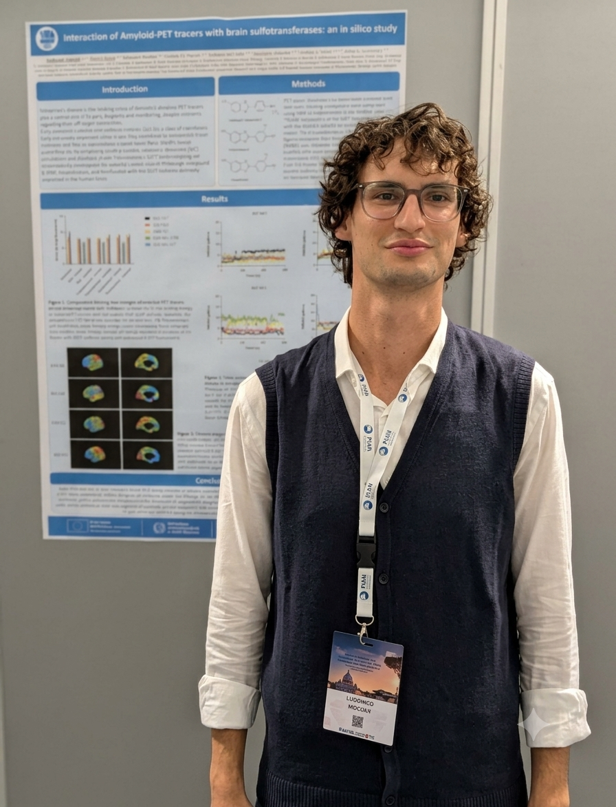
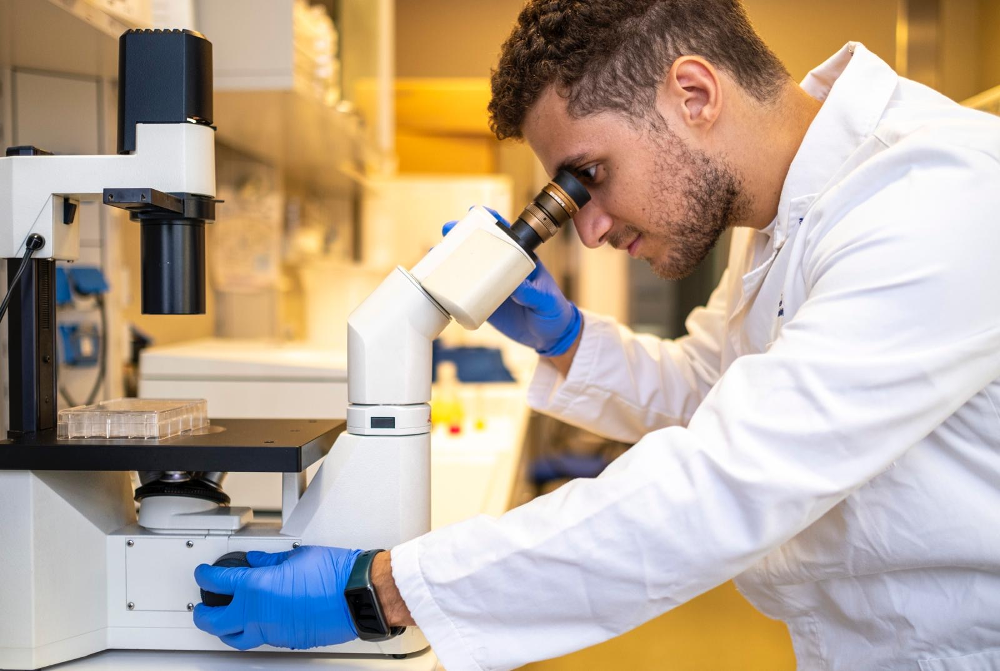

People

Alberto Granzotto
Principal Investigator
Associate Professor in molecular neuroscience at CAST and DNISC, Università “G. d’Annunzio” Chieti–Pescara.
Manuela Bomba
Lab Technician
[One or two lines]

Ludovico Miccoli
Resident in Neurology
[One or two lines]

Nathan Spano
Resident in Neurology
[One or two lines]
Alumni
click to show the list
- NameIn the lab asYearsNow
- Rosa FullonePostdoc2023–2026Lecturer
- Stefano RamieriGraduate student2026Trainee, Pescara Hospital
- Claudia di MarzioGraduate student2022–2026PhD student, University of Chieti-Pescara